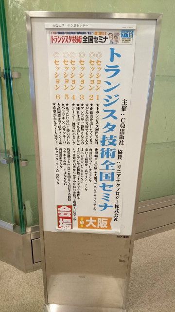
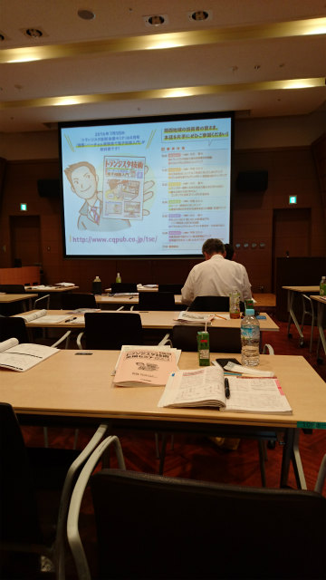
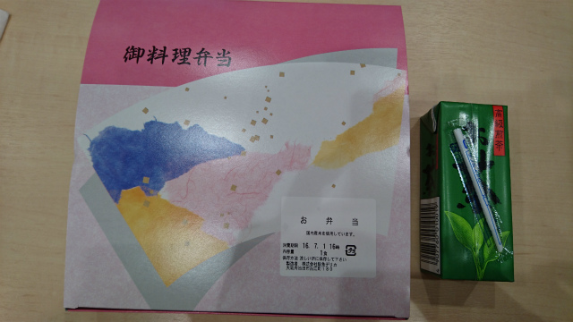

| ・ トランジスタ技術全国セミナ＠大阪大学中之島センター (H28.07.01) | |||
トランジスタ技術全国セミナにB4のT口さんが参加しました．アンプは研究室内でいろいろ実装してきました． はじめは単に増幅できれば良かったのですが，ここ数年で測定精度が必要になってきています．もう作ってからあれこれする前にある程度特性を知りたいところ． ちょうど今回，回路シミュレータ「LTspice」と電子回路の講習があったので参加しました． |
|||
|
福島から |
中之島まで | ||
|

トラ技の看板 |

朝から夕方までみっちり | ||
|
自習済み |

お弁当 | ||